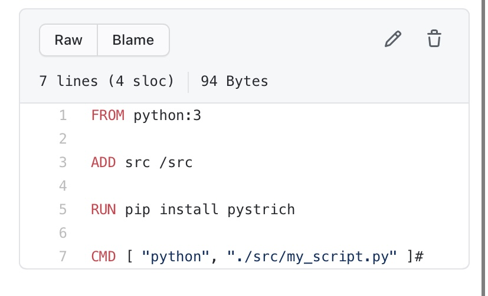
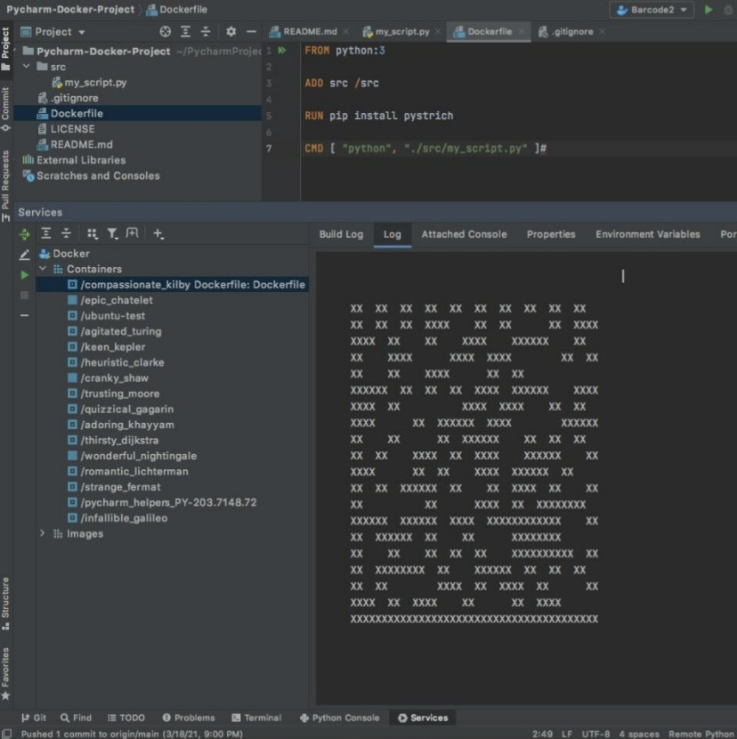

How to connect Docker to Pycharm to write python code.
Now let's get into our last tutorial. here we're going to teach you how to connect Docker to Pycharm so that you can write Python Code in Docker.
Before we get started. Here's a link to a great video that is a good visual guide for this tutorial.
Step 1: It may be obvious, but install Pycharm Pro, Git, and Docker. If you followed the last tutorial, you shouldn't have a problem. Once docker is setup and running in your computer we can continue to the next steps.
Step 2: Create a Github Repository and clone the repo into github by pressing the code button on homepage of the repo. after cloning the repo into Pycharm, Open the cloned repo in Pycharm and create an src directory and in the src directory add a python file. In this video the file is called m_script.py
Next create a Docker file. In this Dockerfile. Put the following that is shown in the image below. After which go to either file>settings(Windows) or preferences(Mac). Go down to Build, Execution, Deployment. Choose Docker, and make sure it says connection successful.

Step 3: Go up to Add Configuration in Pycharm, click the plus sign and click Docker, then Dockerfile. Name the Dockerfile whatever you want, then choose Dockerfile in the Dockerfile dropdown. Then for image tag make sure you put the same name as the Dockerfile name. Make sure Run Built Image is clicked and then apply it. The image below will provide some clarity.

Step 4: Press the play button at the top of Pycharm, next to Add Configuration. Once the Docker program is done running, press Log and see the image that was made. finally go down to the bottom right corner and press the python button. Click Add Interpreter, Click Docker and choose the latest docker image created. The image below is what the image created should end up looking like.

You are now done. After reading through this website, you should have a better understanding of Docker and Pycharm. Hopefully these tutorials and Webpages have given you sufficient information in order to create your very own Docker project. Thanks for Reading!